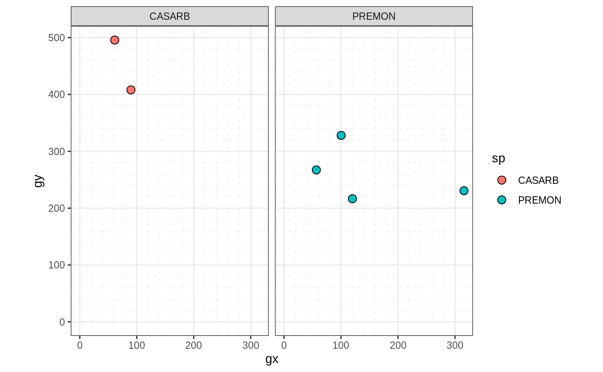
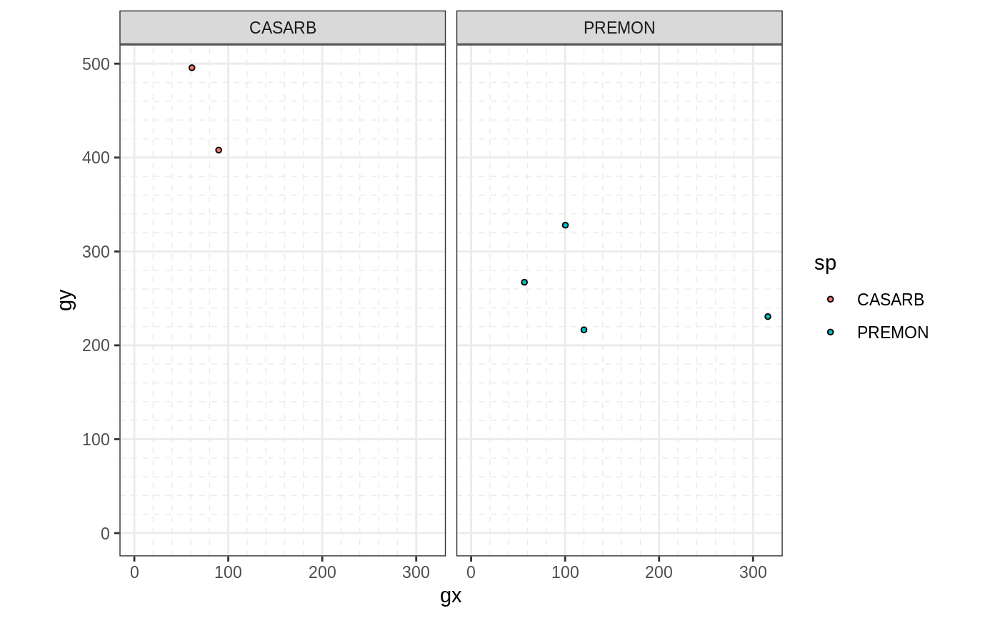
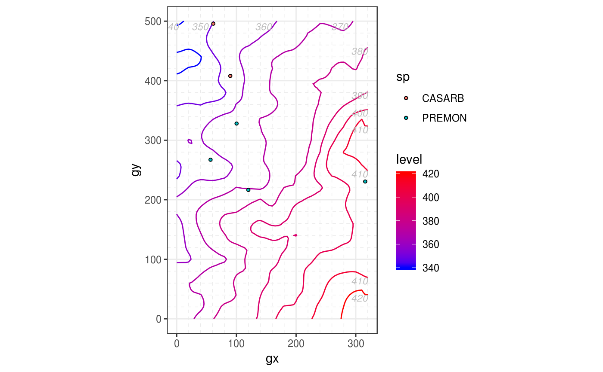
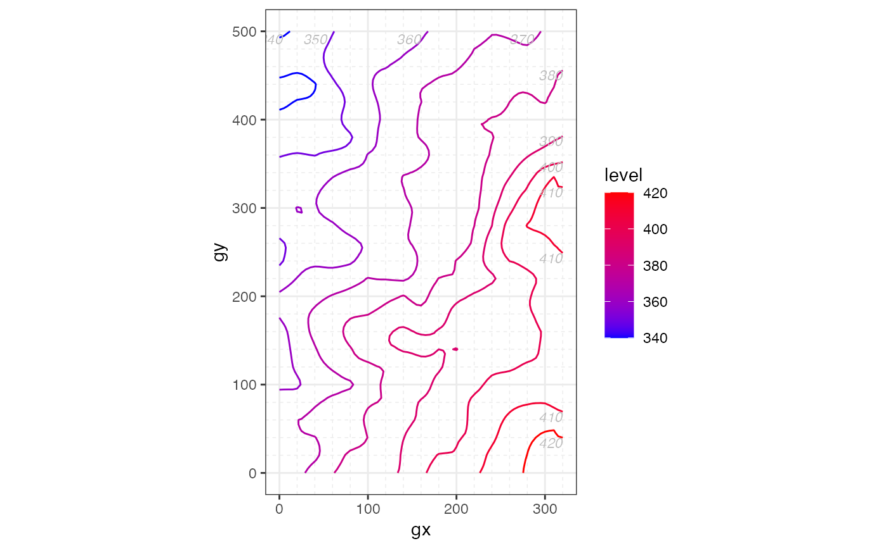
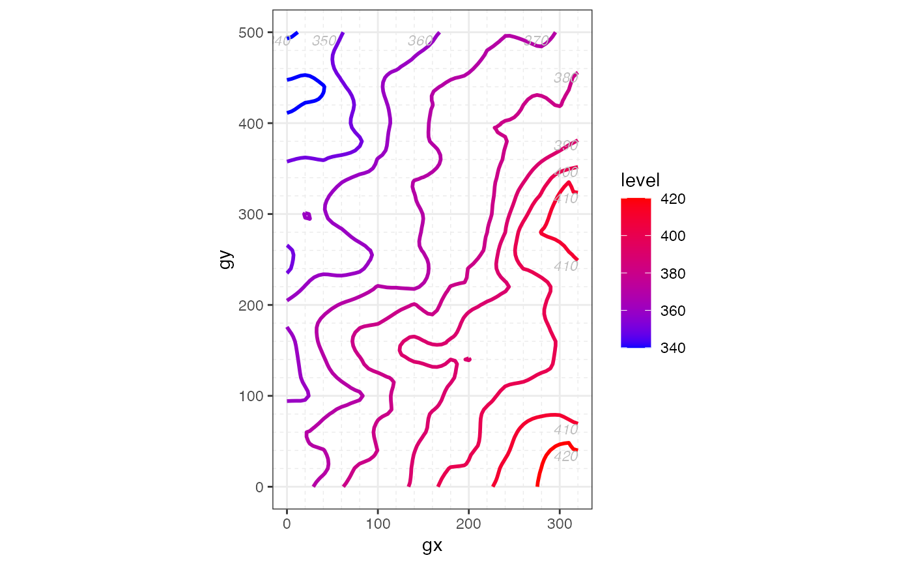
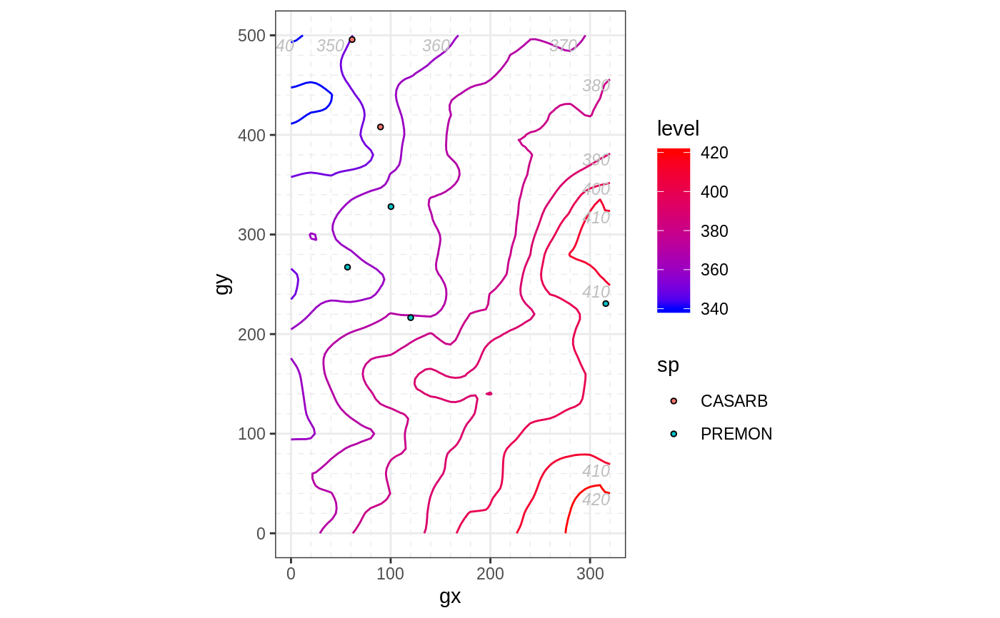

Plot the columns sp and/or elev of ForestGEO-like datasets of class 'sp'
and/or 'sp_elev'.
You can create a 'sp' object with:
object <- sp(DATA-WITH-VARIABLE-sp)
You can create an 'elev' object with:
object <- elev(DATA-WITH-VARIABLE-elev)
You can create a 'sp_elev' object with:
object <- sp_elev(DATA-WITH-VARIABLE-sp, DATA-WITH-VARIABLE-elev)
See Examples below.
# S3 method for sp_elev autoplot(object, fill = "sp", hide_fill_legend = FALSE, shape = 21, point_size = 3, facet = TRUE, contour_size = 0.5, low = "blue", high = "red", hide_color_legend = FALSE, bins = NULL, add_elevation_labels = TRUE, label_size = 3, label_color = "grey", xyjust = 1, fontface = "italic", xlim = NULL, ylim = NULL, custom_theme = NULL, ...) # S3 method for sp autoplot(object, fill = "sp", hide_fill_legend = FALSE, shape = 21, point_size = 3, facet = TRUE, xlim = NULL, ylim = NULL, custom_theme = NULL, ...) # S3 method for elev autoplot(object, contour_size = 0.5, low = "blue", high = "red", hide_color_legend = FALSE, bins = NULL, add_elevation_labels = TRUE, label_size = 3, label_color = "grey", xyjust = 1, fontface = "italic", xlim = NULL, ylim = NULL, custom_theme = NULL, ...)
| object | |
|---|---|
| fill | Character; either a color or "sp", which maps each species to a different color. |
| hide_fill_legend | Logical; |
| shape | A number giving point shape (as in |
| point_size | A number giving point size. Passed to
|
| facet | Logical; |
| contour_size | A number giving the size of the contour of elevation
lines. Passed to |
| low, high | A string giving a color of the elevation lines representing low and high elevation. |
| hide_color_legend | Logical; |
| bins | A number giving the number of elevation lines to plot. |
| add_elevation_labels | Logical; |
| label_size, label_color, fontface | A number ( |
| xyjust | A number to adjust the position of the text labels of the elevation lines. |
| xlim, ylim | A vector of length 2, for example |
| custom_theme | A valid |
| ... | Not used (included for compatibility across methods). |
A "ggplot".
autoplot(sp_elev(DATA-WITH-VARIABLE-sp) (without elevation data) is
equivalent to autoplot(sp(DATA-WITH-VARIABLE-sp)).
fgeo.plot wraps some functions from the ggplot2 package. For more control you can use ggplot2 directly.
Other plot functions: autoplot.fgeo_habitat,
autoplot_by_species.sp_elev,
elev,
plot_dbh_bubbles_by_quadrat,
plot_tag_status_by_subquadrat,
sp_elev, sp
Other autoplots: autoplot.fgeo_habitat,
elev, sp_elev,
sp
Other functions to plot elevation: autoplot_by_species.sp_elev,
elev, sp_elev
Other functions to plot species: autoplot_by_species.sp_elev,
sp_elev, sp
assert_is_installed("fgeo.x") # Species --------------------------------------------------------------- # Small dataset with a few species for quick examples census <- fgeo.x::tree5 %>% subset(sp %in% c("PREMON", "CASARB")) autoplot(sp(census))# Elevation ------------------------------------------------------------- elevation <- fgeo.x::elevation autoplot(elev(elevation))# Species and elevation ------------------------------------------------- autoplot(sp_elev(census, elevation), facet = FALSE, point_size = 1)# }